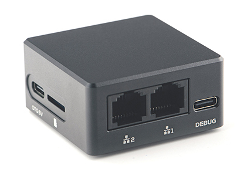
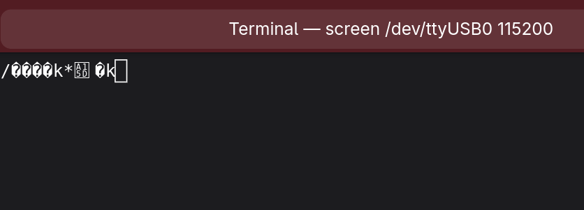

FriendlyElec NanoPi R28S
CNX software brought to the NanoPi R28S to my attntion - A tiny dual GbE Rockchip RK3528A wireless SBC and router with a USB-C console port.
At 49.5x49.5x24mm (that's roughly 2"x2"x1" in freedom units), this should make an excellent travel router, so I rodered one.

The FriendlyElec NanoPi R28S is "a compact development board with dual Gigabit Ethernet ports and integrated Wifi and bluetooth... us[ing] a RK3538 CPU with 1GB LPDDR4x RAM, and supports an optional eMMC module."
Setup
This is new hardware, so I'm not optimistic that it's well documented. Let's start with the official wiki. "Download this image file from our google or baidu drive" - yup, sketchy.
I'm pretty sure I ordered the eMMC, and I'm a debian guy, so we'll look for that image file, and dd to an sdcard. Browsing the wiki, and the google drive, the file naming conventions are all over the place, and there aren't always entries for the new R28S model. Oh goodie.
The webpage at least shows the product name (R28S), and the img file has the chip name (rk3528-eflasher-debian-trixie-core-6.1-arm64-20260729.img), so let's have faith.
# dd if=rk3528-eflasher-debian-trixie-core-6.1-arm64-20260729.img of=/dev/mmcblk0 bs=4M status=progress
14742978560 bytes (15 GB, 14 GiB) copied, 126 s, 117 MB/s
3515+1 records in
3515+1 records out
14744999936 bytes (15 GB, 14 GiB) copied, 389.813 s, 37.8 MB/s
Being a complete and total techno-optimist, I pop the sdcard in, plug into the network, and trust that everything just works. The LEDs go through the imaging blink code process documented in the wiki, and after about 10 minutes, I reboot the R28S, and look for a DHCP request. Nothing.
Okay, I'll use my USB-C PD 5k monitor. Since there are only 2 output options on the thing (USB-C and USB-C debug), I'll hope they spent the extra 12 cents on a "real" full-featured USB-C controller. Nope.
So the USB-C must just be power and data - grabbing my powered HDMI USB hub/splitter thing, I'll assume that HDMI will just work. And that's met with another failure. The monitor blinks like it detected a device, but no signal.
OKAY FINE, let's try the debug port. EVERYTHING supports serial, right? Connecting a USB-C to USB-C cable, we fire up screen.
ls -lrt /dev/tty* shows that /dev/ttyUSB0 was just created, so let's use that.
# ls -lrt /dev/tty*
crw------- 1 root tty 4, 1 Aug 30 10:47 /dev/tty1
crw------- 1 root tty 4, 10 Aug 30 10:47 /dev/tty10
crw-rw-rw- 1 root tty 5, 0 Aug 30 10:47 /dev/tty
crw------- 1 root tty 4, 0 Aug 30 10:47 /dev/tty0
crw------- 1 root tty 4, 11 Aug 30 10:47 /dev/tty11
=====>% SNIP %<=====
crw-rw---- 1 root dialout 4, 66 Aug 30 10:47 /dev/ttyS2
crw-rw---- 1 root dialout 4, 64 Aug 30 10:47 /dev/ttyS0
crw-rw---- 1 root dialout 4, 65 Aug 30 10:47 /dev/ttyS1
crw------- 1 barry tty 4, 2 Aug 30 10:50 /dev/tty2
crw-rw---- 1 root dialout 188, 0 Aug 30 10:52 /dev/ttyUSB0
screen /dev/ttyUSB0 shows nothing, so let's iterate through the baud settings. Good 'ole 9600 shows
ASCII garbage, so we're on to something. 56k (57600) shows the same, as does 112k (115200), but 112k is a bit better.

Let's reboot to see if we can pre-negotiate. At 112k, we get LOTS of ASCII garbage, but not much else. After a few minutes, the LEDs indicate success, so remove the sdcard and REBOOT!
Encouraging! A DHCP request:
2026-08-30T12:21:11.616904-05:00 dhcpd[125001]: DHCPOFFER on 192.168.2.158 to 4e:42:9f:98:fb:ff (NanoPi-R28S) via enp3s0
2026-08-30T12:21:11.617248-05:00 dhcpd[125001]: DHCPREQUEST for 192.168.2.158 (192.168.2.1) from 4e:42:9f:98:fb:ff (NanoPi-R28S) via enp3s0
SSH is successful:
$ ssh -opubkeyauthentication=no -p22 192.168.2.158 -lpi
The authenticity of host '192.168.2.158 (192.168.2.158)' can't be established.
ED25519 key fingerprint is: SHA256:/T1W4j5/sxISRpRgp6reTEyoqebd5MrY6pkIPnRztY0
This key is not known by any other names.
Are you sure you want to continue connecting (yes/no/[fingerprint])? yes
Warning: Permanently added '192.168.2.158' (ED25519) to the list of known hosts.
pi@192.168.2.158's password:
Linux NanoPi-R28S 6.1.141 #52 SMP Tue Jul 28 18:10:36 CST 2026 aarch64
The programs included with the Debian GNU/Linux system are free software;
the exact distribution terms for each program are described in the
individual files in /usr/share/doc/*/copyright.
Debian GNU/Linux comes with ABSOLUTELY NO WARRANTY, to the extent
permitted by applicable law.
pi@NanoPi-R28S:~$
A quick scan of the hardware:
pi@NanoPi-R28S:~$ uname -a
Linux NanoPi-R28S 6.1.141 #52 SMP Tue Jul 28 18:10:36 CST 2026 aarch64 GNU/Linux
pi@NanoPi-R28S:~$ free -m
total used free shared buff/cache available
Mem: 964 269 486 20 344 695
Swap: 0 0 0
pi@NanoPi-R28S:~$ df -h
Filesystem Size Used Avail Use% Mounted on
udev 467M 0 467M 0% /dev
tmpfs 97M 1.4M 96M 2% /run
overlay 229G 113M 217G 1% /
tmpfs 483M 0 483M 0% /dev/shm
tmpfs 5.0M 8.0K 5.0M 1% /run/lock
tmpfs 483M 0 483M 0% /tmp
tmpfs 97M 8.0K 97M 1% /run/user/1000
pi@NanoPi-R28S:~$ ip a s
1: lo: mtu 65536 qdisc noqueue state UNKNOWN group default qlen 1000
link/loopback 00:00:00:00:00:00 brd 00:00:00:00:00:00
inet 127.0.0.1/8 scope host lo
valid_lft forever preferred_lft forever
inet6 ::1/128 scope host noprefixroute
valid_lft forever preferred_lft forever
2: eth0: mtu 1500 qdisc mq state UP group default qlen 1000
link/ether 4e:42:9f:98:fb:ff brd ff:ff:ff:ff:ff:ff
inet 192.168.2.158/24 brd 192.168.2.255 scope global dynamic noprefixroute eth0
valid_lft 2013sec preferred_lft 2013sec
inet6 fe80::83b6:445f:22aa:814d/64 scope link noprefixroute
valid_lft forever preferred_lft forever
3: eth1: mtu 1500 qdisc mq state DOWN group default qlen 1000
link/ether 52:42:9f:98:fb:ff brd ff:ff:ff:ff:ff:ff
4: wlan0: mtu 1500 qdisc mq state DORMANT group default qlen 1000
link/ether 54:01:4a:50:1a:de brd ff:ff:ff:ff:ff:ff